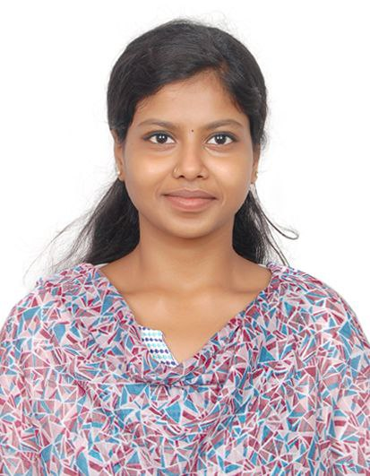

01
Patient-Specific Mitral Valve Digital Twins
Creating anatomically informed, patient-specific mitral valve models from cardiovascular imaging for virtual intervention studies.
PhD Scholar · IIT Madras
Developing patient-specific mitral valve digital twins for virtual MitraClip simulation, biomechanical assessment and personalized intervention planning.

Jotheeswari Murali
PhD Scholar · Department of Medical Science and Technology, IIT MadrasAbout me
Jotheeswari is a PhD Scholar in the Department of Medical Science and Technology at IIT Madras. She completed a four-year B.Sc. in Cardiac Technology and a two-year M.Sc. in Cardiovascular Sciences at Sri Ramachandra Institute of Higher Education and Research, Chennai.
Her doctoral research focuses on developing patient-specific digital twins of the mitral valve for virtual simulation of Transcatheter Edge-to-Edge Repair (TEER), particularly MitraClip procedures. Her work brings together cardiovascular imaging, three-dimensional reconstruction, finite element analysis and biomechanical simulation.
Through these virtual models, she aims to investigate how alternative clip locations, orientations and device strategies influence valve mechanics and post-procedural outcomes. The broader goal is to enable clinicians to move beyond assessing anatomy towards virtually evaluating intervention strategies for more personalized treatment planning.
Research
Creating anatomically informed, patient-specific mitral valve models from cardiovascular imaging for virtual intervention studies.
Using computational biomechanics to investigate mitral valve deformation, leaflet mechanics, stress and strain during intervention.
Simulating alternative clip locations, orientations and configurations to study their influence on valve function and post-clip performance.
Exploring biomechanical and haemodynamic indicators to support assessment of intervention outcomes and personalized treatment strategies.
Selected work
Developing patient-specific mitral valve models and simulating virtual TEER strategies to evaluate post-clip valve mechanics and support treatment planning.
Exploring deep learning approaches to extract clinically relevant cardiac function measures from echocardiographic video data.
Working with cardiovascular imaging and three-dimensional modelling approaches to represent patient-specific cardiac anatomy for computational analysis.
Academic journey
Department of Medical Science and Technology
IIT Madras
Sri Ramachandra Institute of Higher Education and Research, Chennai
Sri Ramachandra Institute of Higher Education and Research, Chennai
“Moving from understanding cardiac anatomy to virtually testing patient-specific interventions.”
Contact
For academic collaborations, research discussions and professional enquiries.